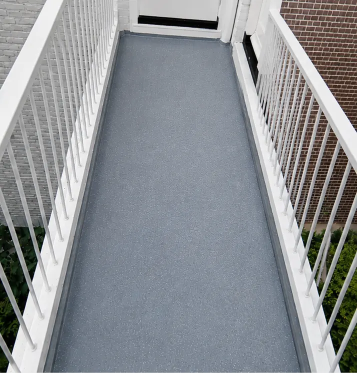
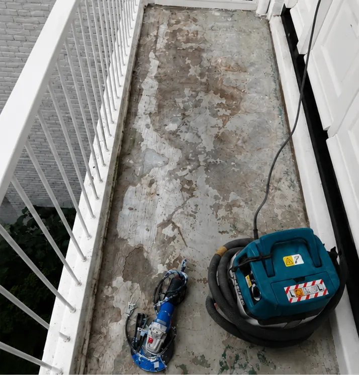
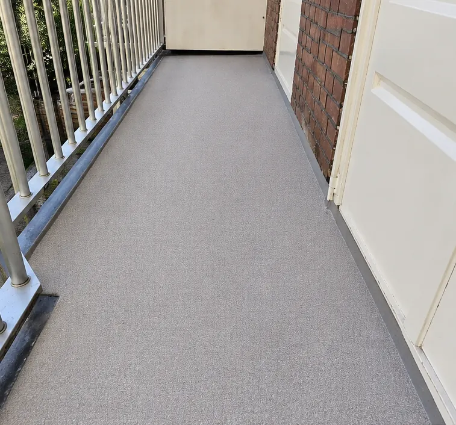
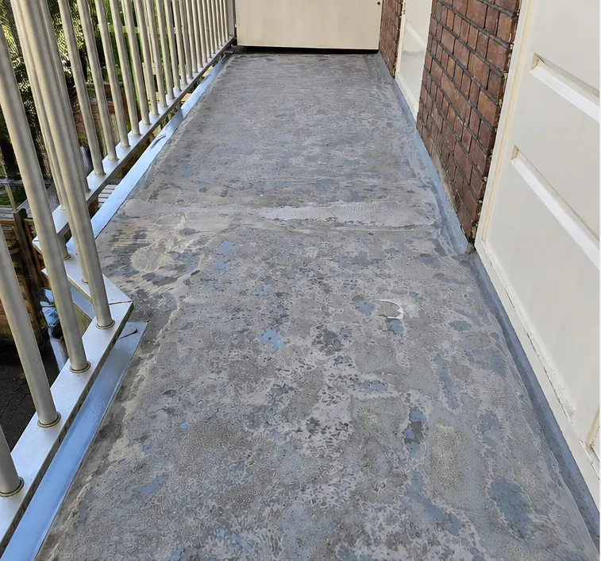
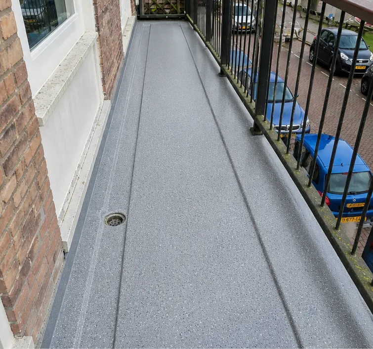
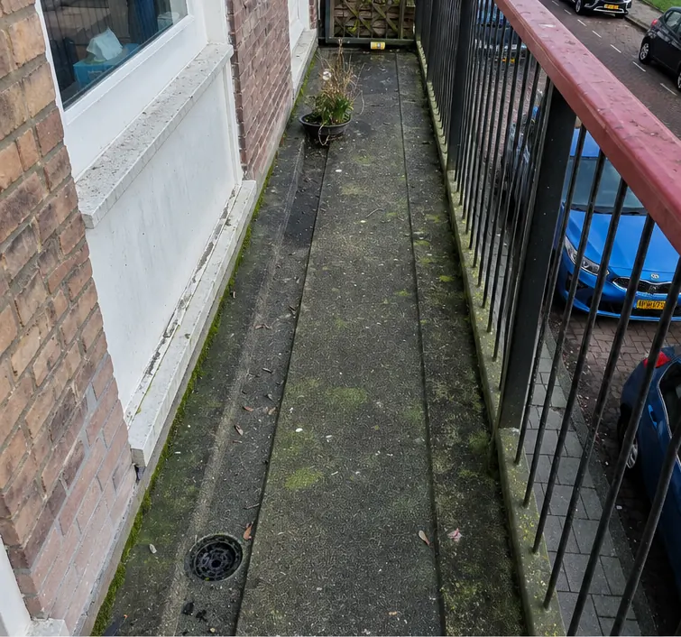

Vloercoating voor balkon, galerij en bedrijfsvloer
Een strakke, waterdichte en slijtvaste vloer, aangebracht door specialisten. Wij adviseren welk systeem past: epoxy, polyurethaan of acrylaat.
- Balkon vaak binnen 1 dag gecoat, na 60 minuten weer beloopbaar (particulieren)
- Veel ervaring met galerijen en balkons voor VvE’s en woningcorporaties
- Gratis inspectie en vrijblijvende offerte op maat
- VCA-gecertificeerdVeilig werken op locatie
- NEN-EN 1504Europese norm voor betonherstel
- CUR-Aanbeveling 118Richtlijn voor betonreparatie
- 1 aanspreekpuntVan inspectie tot oplevering
- Gratis inspectie op locatieOfferte vrijblijvend
Welke coating past bij u?
Elke ruimte vraagt een ander systeem. Beantwoord drie vragen, of vergelijk de coatings hieronder.
| Eigenschap | |||
|---|---|---|---|
| Hardheid | Zeer hard | Zachter, flexibel | Erg sterk |
| Flexibiliteit | Beperkt | Hoog, scheuroverbruggend | Gemiddeld* |
| UV-bestendigheid | Beperkt* | UV-bestendig | Op aanvraag* |
| Chemische bestendigheid | Zeer hoog, ook chemisch reinigen | Gemiddeld* | Bestand tegen vloeistoffen |
| Loopcomfort | Hard | Hoog | Gemiddeld* |
| Antislip mogelijk | Ja | Ja | Ja, van nature stroef |
| Typisch gebruik | Balkons, galerijen, garages, industrie, ruimtes met olie of chemicaliën | Woningen, balkons, galerijen, terrassen | Intensief belaste, natte ruimtes* |
Alle drie zijn 2-componentensystemen (hars en harder), leverbaar in veel kleuren en af te werken met flakes. Waarden met * zijn een indicatie; de definitieve keuze maken wij na inspectie.
Uw balkon in 1 dag gecoat
Voor particulieren brengen wij een nieuwe balkoncoating vaak binnen één dag aan. Na 60 minuten kunt u er weer op lopen.
Zo heeft u zo min mogelijk overlast. Het geheim zit in de voorbereiding: de ondergrond moet vrij zijn van stof, olie, vet, vocht, chemicaliën en oude, losse laklagen. Daarom beginnen wij altijd met een inspectie en de juiste voorbehandeling.


VóórNaCoatingsystemen en afwerkingen
Een vloercoating is een dunne kunststoflaag die de vloer beschermt en makkelijker te onderhouden maakt, in vrijwel elke kleur.
- Epoxy
Zeer hard en bestand tegen chemisch reinigen. Geschikt voor ruimtes waar met oliën en chemicaliën wordt gewerkt, en veel toegepast op galerijen en balkons bij woningcorporaties.
- Polyurethaan (PU)
Flexibeler en zachter dan epoxy, UV-bestendig en met een hoger loopcomfort. Goed toepasbaar in woningen, waar verkleuring vaker voorkomt en loopcomfort belangrijk is.
- Acrylaat
Bestand tegen vloeistoffen, antislip, erg sterk en slijtvast.
- DeckCoat voor parkeergarages
Een antislipsysteem met ingestrooide antisliplaag voor garages met gemiddelde verkeersbelasting. Meer over garagevloeren
- Gietvloeren
Een zelfnivellerende, vloeistofdichte gietlaag voor opslag, productie, werkplaatsen en laadperrons, in alle RAL- en NCS-kleuren.
- Flakes-afwerking
Een decoratieve, slijtvaste afwerking met ingestrooide flakes, bijvoorbeeld op galerijen.
Vloercoating-projecten
Van Diergaarde Blijdorp tot een distilleerderij in Muiden en galerijen in Amsterdam.


VóórNa

VóórNaZo brengen wij een coating aan
Bekijk hoe onze vakmensen een epoxy- of polyurethaanvloer aanbrengen: van voorbereiding van de ondergrond tot de afwerklaag.
De video wordt pas geladen als u op afspelen klikt (YouTube, privacyvriendelijke modus).
Onderhoud van uw coatingvloer
Met goed onderhoud gaat uw coating zo lang mogelijk mee. Hoe vaak hangt onder meer af van de kleur: lichte coatings hebben sneller reiniging nodig dan donkere.
- Maak de vloer stofvrij met een zachte bezem.
- Gebruik een speciale reiniger voor gecoate vloeren.
- Verwijder vlekken met een dweil en lauwwarm water.
Zelf coaten: goedkoop of duurkoop?
Online staan veel handleidingen om zelf een vloer te coaten. Heeft u ervaring, dan is het een optie. Zonder ervaring is een fout snel gemaakt: een verkeerd voorbehandelde ondergrond of een verkeerde mengverhouding, en u kunt opnieuw beginnen. Dan bent u uiteindelijk duurder uit.
Wij hebben al veel coatings aangebracht en weten welk systeem bij welke ondergrond past. En uw balkon is vaak binnen één dag klaar.
Vragen over vloercoatings
Staat uw vraag er niet bij? Bel 020 210 1904.
De prijs hangt af van diverse factoren: de oppervlakte, de staat van de ondergrond, het gekozen systeem en de afwerking. Na een gratis inspectie ontvangt u een offerte op maat.
Bij particuliere balkons brengen wij de coating vaak binnen 1 dag aan, en na 60 minuten is het balkon weer beloopbaar. Bij grotere vloeren hangt het af van het systeem; dat hoort u vooraf.
Vloercoatings zijn in veel kleuren leverbaar, gietvloeren zelfs in alle RAL- en NCS-kleuren. Ook een afwerking met flakes is mogelijk.
Ja, mits de ondergrond goed wordt voorbereid. Oude vloeren moeten vrij zijn van stof, oliën, vetten, vocht, chemicaliën en losse laklagen. Betonschade herstellen wij eerst.
Klaar voor een nieuwe vloer?
Gratis inspectie op locatie en een heldere offerte. Of bel direct voor advies.